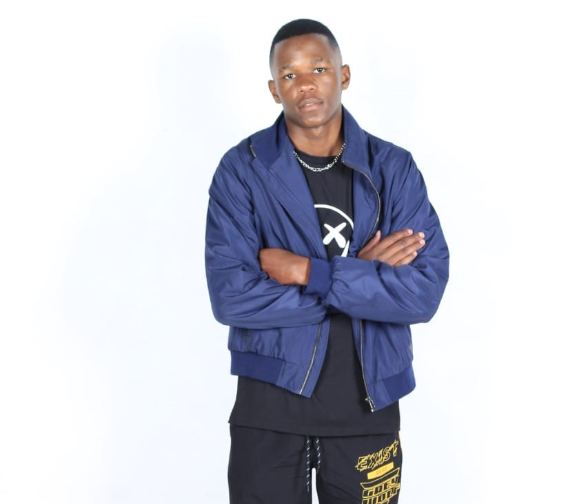

Hats off to the Class of 2024 — you made it!
Rosebank Collage Instagram Page
Rosebank College celebrates your hard work, dedication, and success. Today marks not just the end of a journey, but the beginning of limitless possibilities. Go out and shine — the future is yours!
Students Making a Difference
Photo by Mc Donald
At Rosebank College, leadership goes beyond the classroom. Our students continue to shine as community leaders, dedicating their time and energy to uplift those around them. From organising charity drives and food donations to volunteering at local shelters and schools, Rosebank students are proving that true success is not only about personal achievement, but also about giving back.
These initiatives not only impact the community positively but also inspire fellow students to embrace compassion, teamwork, and social responsibility. Rosebank is proud to celebrate these young leaders who embody the spirit of service and remind us all that small actions can create big change.
Student Of The Month: Unathi Lahliwe
Photo by Pixel Pictures
Rosebank College is proud to recognise Unathi Lahliwe as our Student of the Month for achieving total distinctions in Mobile App and Web Development during the first semester. This outstanding accomplishment reflects not only academic excellence but also dedication, creativity, and technical skill in one of the most competitive and fast-evolving fields.
Unathi’s achievement highlights the bright future of innovation at Rosebank College. Excelling in Mobile App and Web Development requires precision, problem-solving, and innovation — qualities that Unathi has consistently demonstrated. Through hard work and perseverance, Unathi has proven that excellence is attainable in every line of code, serving as an inspiration to fellow students.
In reflecting on this achievement, Unathi shared: “I am truly grateful for this recognition. Earning distinctions in Mobile App and Web Development has shown me that passion and perseverance go hand in hand. My message to fellow students is simple: stay curious, put in the effort, and believe in your ability to achieve great things — one project, one step at a time.”
Leadership Appreciation
Photo by Phumelelo
Rosebank College proudly extends heartfelt gratitude to our Student Leader for the patience, dedication, and compassion shown toward both new and returning students. Your willingness to guide, listen, and support has created a welcoming and inspiring environment on campus. By leading with humility and understanding, you have not only made a difference in the lives of your peers but also set an example of true leadership. We celebrate you today and thank you for being a steady source of encouragement and strength within our college community.
Read about our Creatives